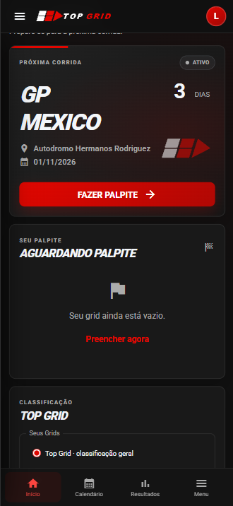
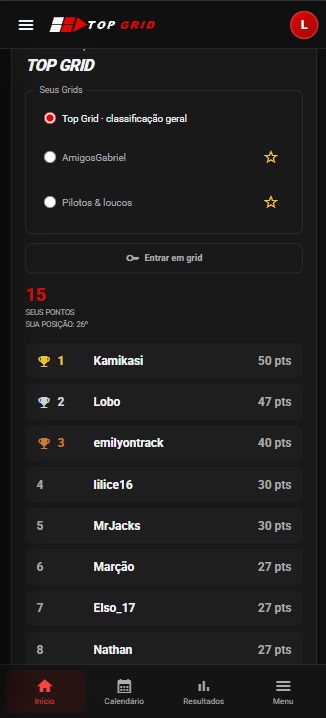
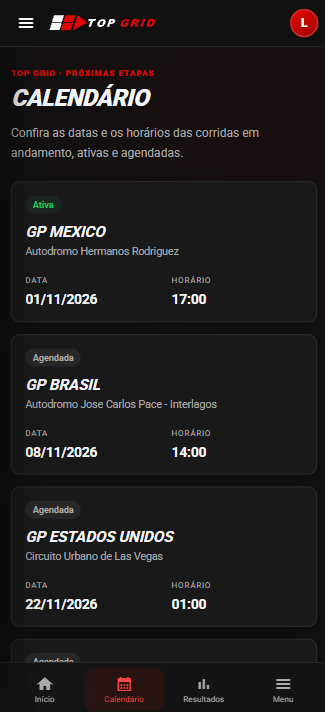
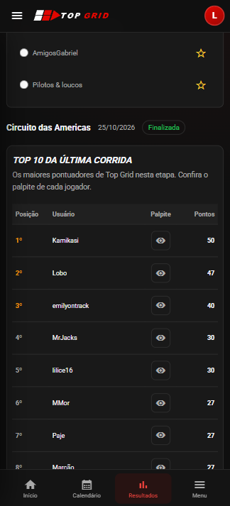

Imagem 1 de 4
APLICAÇÃO WEB / FULL STACK
Top Grid
Minha atuaçãoDesenvolvi o Top Grid de forma independente, como desenvolvedor solo, desde a concepção e a arquitetura do sistema até a definição das regras de negócio e a implementação full stack, incluindo interface, backend e integração com o banco de dados. Também sou responsável pela manutenção e evolução da aplicação, pelos deploys e pela configuração e gestão dos ambientes, acompanhando todo o ciclo de desenvolvimento e operação do sistema.
Meu projeto próprio de automobilismo. Uma plataforma para fazer palpites sobre os cinco primeiros colocados de cada corrida e acompanhar a disputa na classificação.
- Palpites e pontuação por corrida
- Grids para reunir participantes
- Autenticação e administração de usuários